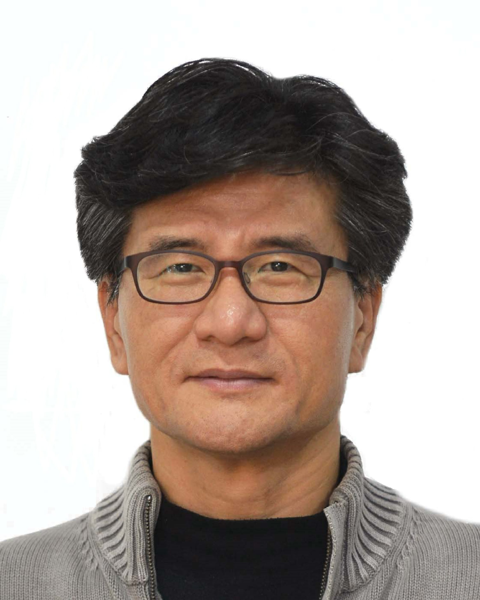
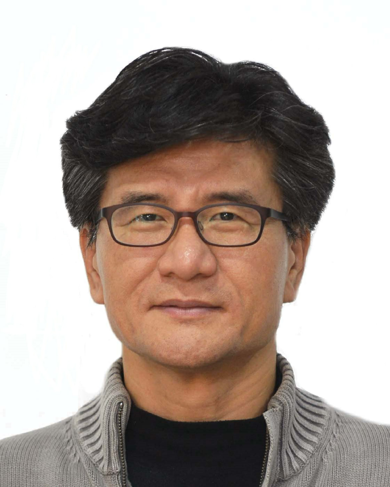

Professor

Jaekyun (Jae) Moon

Jaekyun (Jae) Moon
Professor, School of Electrical Engineering (EE), KAIST
Joint Professor, School of Computing (CS), KAIST
Joint Professor, School of AI (AI), KAIST
291 Daehakro, Yuseong-gu
Daejeon, 305-701, Republic of Korea
Phone: 82-42-350-3487 (042-350-3487)
e-mail: jmoon (at) kaist.edu
Prof. Jaekyun Moon founded the Communications and Data Storage Lab at the University of Minnesota in 1990, when he joined its ECE Department as an Assistant Professor. He has since successfully established lab's international visibility and reputation through innovative research and commercialization efforts in signal processing and coding related to achieving high-density storage and high-rate communications. In 2009, he relocated his lab to the EE department at KAIST and is currently continuing research in communications, storage and machine learning. His current research emphasizes on how to design coding schemes geared to distributed and decentralized forms of machine learning and data storage/management. His recent interests include distributed/federated computing and learning as well as innovative learning algorithms for low-data and hardware-complexity constrained applications.
BS degree, 1984, Stony Brook University
MS and Ph.D. degrees, 1987 & 1990, Carnegie Mellon University
Assistant Professor, 1990, University of Minnesota
Associate Professor, 1995, University of Minnesota
Professor, 1999-2009, University of Minnesota
Co-founder, President/CTO, Bermai, Inc., a fabless semiconductor start-up, 2001
Consulting Chief Scientist for DSP Group, Inc., 2004-2007
Chief Technology Officer, Link-A-Media Devices Corp, 2008
Professor, KAIST, since 2009
Research interests: Distributed storage and computing, high speed/adaptive learning, coded decentralized data management, error correction coding for NAND flash, nonlinear signal classification and detection via neural nets
- McKnight Land-Grant Professorship from University of Minnesota, 1994-1996
- IBM Faculty Development Awards
- IBM Partnership Awards
- National Storage Industry Consortium (NSIC) Technical Achievement Award
- Program Chair for 1997 IEEE Magnetic Recording Conference
- Past Elected Chair of Sig. Proc. for Storage Technical Committee, IEEE Com Soc
- Lead Guest Editor, 2001 IEEE J-SAC issue on SP for High Density Storage
- Past Editor for IEEE Transactions on Magnetics in signal processing
- IEEE Fellow since 2005